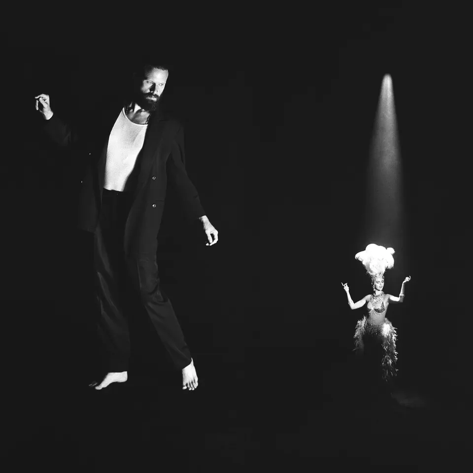
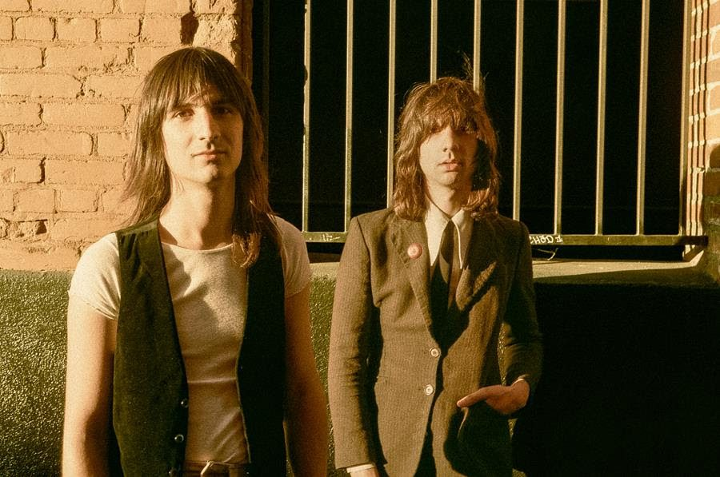
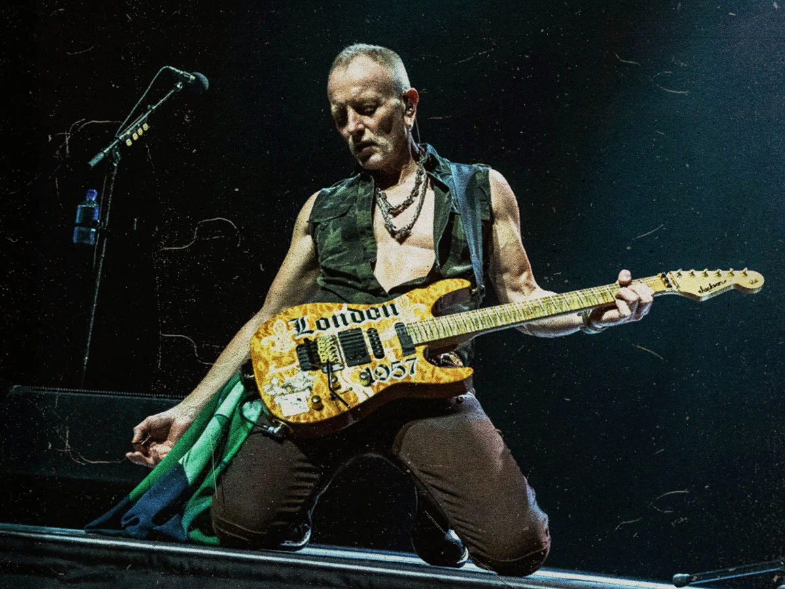

News
Governors Ball 2024 Lineup Announced: SZA, Post Malone, the Killers, and More
By Thomas McCarthy
13/01/24

Review
Father John Misty - Chloë and the Next 20th Century
Joshua Santiago-Francia
03/12/24
Features
Mitski: How the US songwriter scored the year's quietest global chart smash
By Andrew Gallagher
News
Yeat Teases Donald Glover and Drake Collabs for New Album '2093'
By Eduards Oss
News
Why Have We Forsaken Kings of Leon?
Braedon Turner
News
Seafret are coming to Dublin's Academy in 2024
By Joshua Santiago-Francia

Interview
Father John Misty’s Quest to Explain Himself
By Connor Moloney
08/02/24
Podcast
Episode 171 - Glen Hansard
By Matthew Seymour
14/10/24

Releases
The Lemon Twigs announce new album, ‘A Dream Is All We Know’
By Benjamin Macdowall
14/07/24
